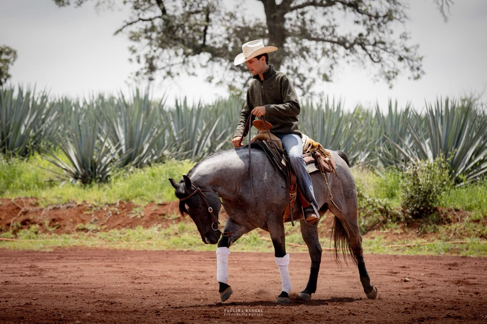

El arte de la rienda charra
Caballos de alto rendimiento
Preparación física, sensibilidad y precisión competitiva para desarrollar binomios capaces de responder en los momentos que definen una cala.
Filosofía AC
La tradición se honra con conocimiento, paciencia y trabajo preciso.
No entrenamos movimientos. Formamos atletas con confianza, fuerza y criterio.
Cada caballo requiere una lectura distinta. El programa se adapta a su etapa, temperamento y objetivo competitivo.
La técnica nace del fundamento: respuesta ligera, condición física, equilibrio y una mente disponible para trabajar.
Explora AC
La información completa, en su lugar.
La landing presenta lo esencial. Cada área cuenta ahora con un espacio propio para profundizar sin perder claridad.

Ejemplares
Conoce el caballo, no solo el resultado.
Una ficha clara permite entender etapa, especialidad, temperamento, disponibilidad y objetivos. La trayectoria suma credibilidad; el perfil completo ayuda a tomar mejores decisiones.
Propietarios AC
Cerca del proceso, incluso a la distancia.
Videos frecuentes, fotografías, notas del entrenador, conversación directa, agenda y administración financiera: una experiencia diseñada para propietarios que quieren contexto, no incertidumbre.


AC Performance Horses
La excelencia se entrena.
Conoce una forma de trabajo construida alrededor del caballo, el deporte y la responsabilidad de representar a la charrería.